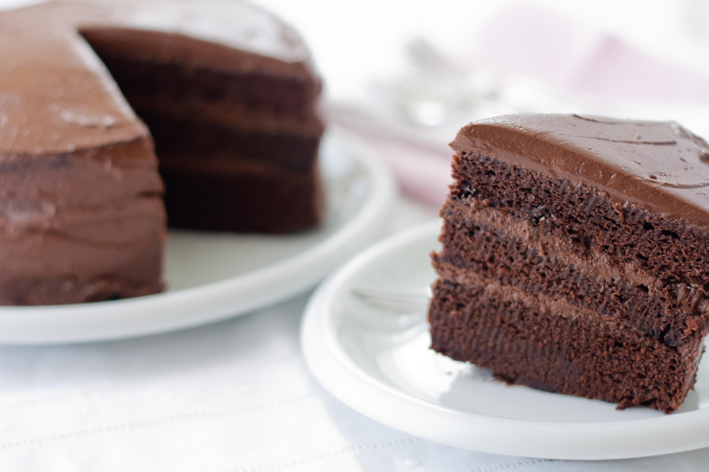

Torta de Chocolate
Un clásico irresistible. Esponjosa, húmeda y perfecta para cualquier ocasión, cubierta con una ganache suave.
Autor
Lautaro Martínez

Lautaro Martínez es un chef creativo y apasionado por la cocina, conocido por su habilidad para transformar ingredientes simples en experiencias gastronómicas memorables. Su estilo combina técnicas clásicas con innovación, ofreciendo platos que sorprenden tanto por sabor como por presentación.
Ingredientes
Para la Torta
- 200 g de harina
- 200 g de azúcar
- 100 g de cacao en polvo
- 3 huevos
- 100 ml de aceite
- 200 ml de leche
- 1 cucharadita de polvo de hornear
Receta
- Batir los huevos con el azúcar hasta que espumen.
- Agregar el aceite y la leche.
- Tamizar harina, cacao y polvo de hornear, e incorporar a la mezcla.
- Volcar en un molde enmantecado y hornear 40 minutos a 180 °C.
- Dejar enfriar y cubrir con ganache o dulce de leche.
Califica esta receta y deja tu opinión
Selecciona una calificación